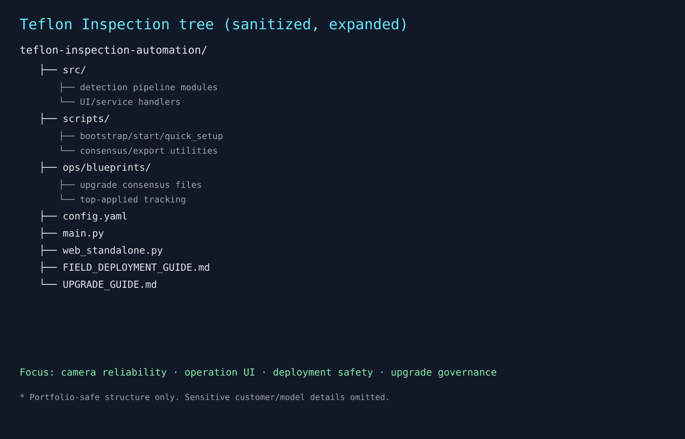

← Projects로 돌아가기
민감정보를 제외한 현장 적용형 자동화 요약
검사 자동화는 모델 정확도만 높다고 끝나지 않습니다. 카메라 연결 안정성, 운영 UI 사용성, 업데이트 흐름이 함께 안정적이어야 현장에서 쓰입니다.
검사 파이프라인과 운영 인터페이스를 함께 설계하고, 배포·업그레이드 시나리오를 분리해 운영 리스크를 낮췄습니다.
현장 운영에서 반복되던 장애 요인을 줄이고, 사용자가 실제로 지속 사용 가능한 수준의 운영 경험을 만들었습니다.
